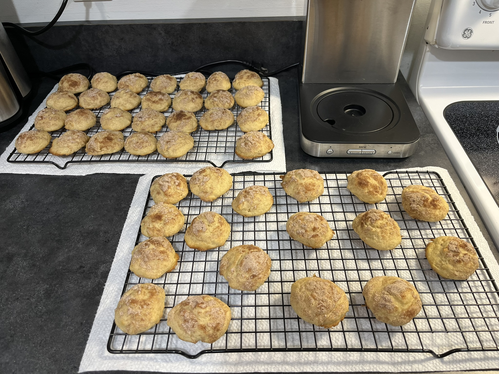

Grandma Shoemaker's Old-Time Cinnamon Jumbles

Description
These cookies were a staple in my house growing up, especially around
the holiday season. They are one of my great-grandmother's many wonderful
recipes, and they have been shared with countless friends and family members.
They're simple, soft, and the perfect amount of sweetness. The baked cookies
freeze very well and are even delicious straight out of the freezer!
Ingredients
For the cookie batter:
- 1/2 cup soft butter shortening
- 1 cup Sugar
- 1 egg
- 3/4 cup buttermilk
- 1 tsp vanilla extract
- 2 cups flour
- 1/2 tsp baking soda
- 1.2 tsp salt
For the cinnamon sugar topping:
- 1/4 cup sugar
- 1 tsp cinnamon
Steps
- In a large bowl, thoroughly mix the shortening, sugar, and egg.
- Stir in the buttermilk and vanilla.
- Sift together the flour, baking soda, and salt, then stir into the wet ingredients.
- Chill the batter for several hours (overnight is recommended).
- Preheat the oven to 400°F and line a baking sheet with parchment paper.
- Mix the ingredients foor the cinnamon sugar topping.
- Drop rounded teaspoonfuls of batter about 2" apart on the baking sheet.
- Sprinkle cinnamon sugar mixture over the cookies.
- Bake at 400° for 8-10 minutes until edges are golden brown.
Yield: About 4 dozen 2" cookies
Return to home